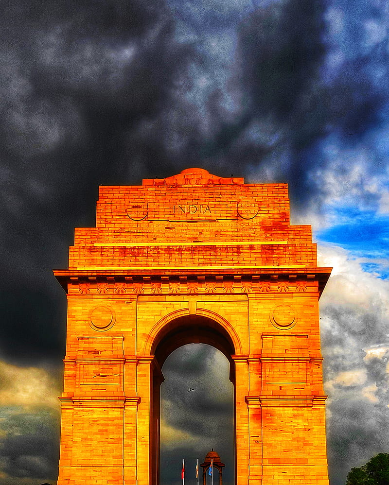
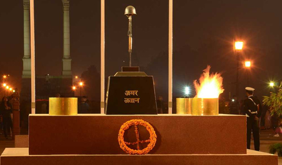
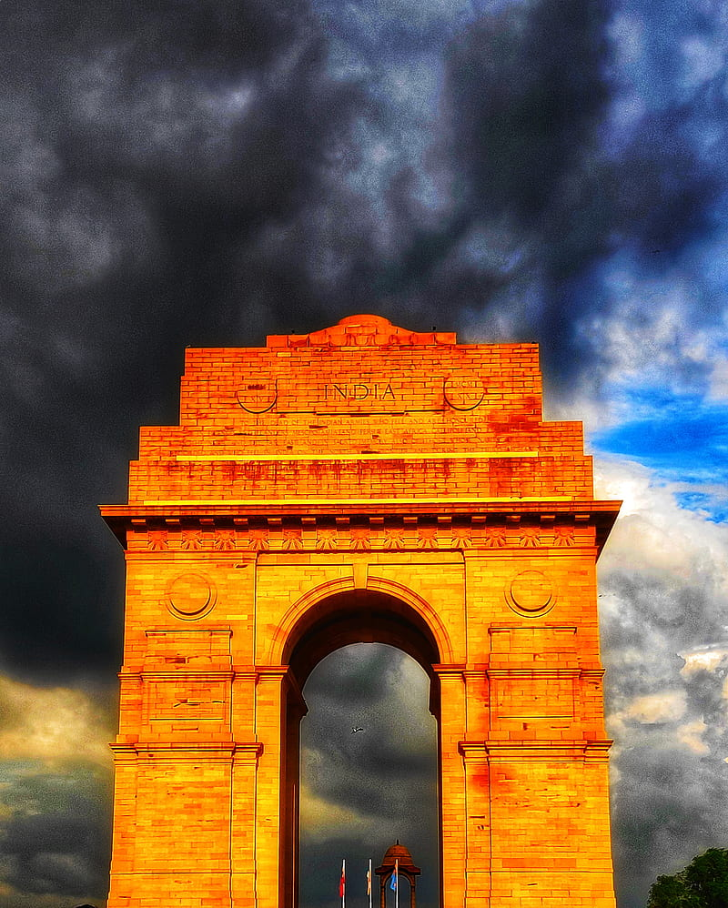
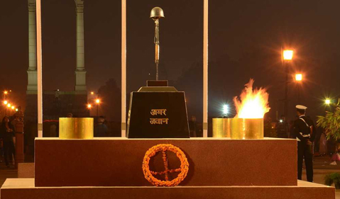

HISTORY
India Gate, located in the heart of New Delhi, stands as one of the most iconic and significant monuments in India. It serves as a memorial to the soldiers of the Indian Army who lost their lives in various conflicts, particularly during World War I. Designed by Sir Edwin Lutyens, the India Gate was originally known as the All India War Memorial and was completed in 1931.
The idea for a memorial to honor Indian soldiers who had sacrificed their lives during the war was proposed by the then Viceroy of India, Lord Irwin, in 1919. The foundation stone for the monument was laid by the Duke of Connaught in 1921, and construction began shortly afterward. The monument's design was inspired by the Arc de Triomphe in Paris, and it stands at a height of 42 meters (138 feet).
 


